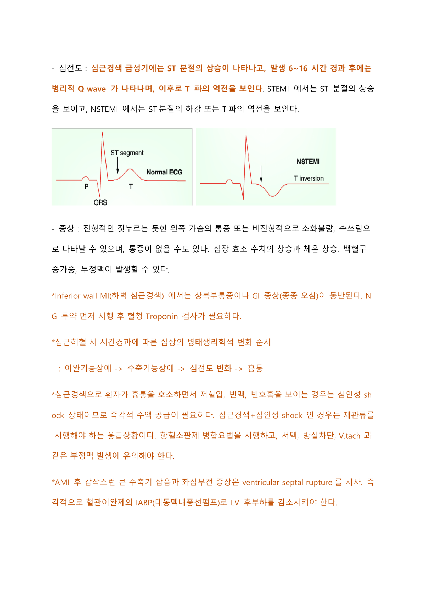
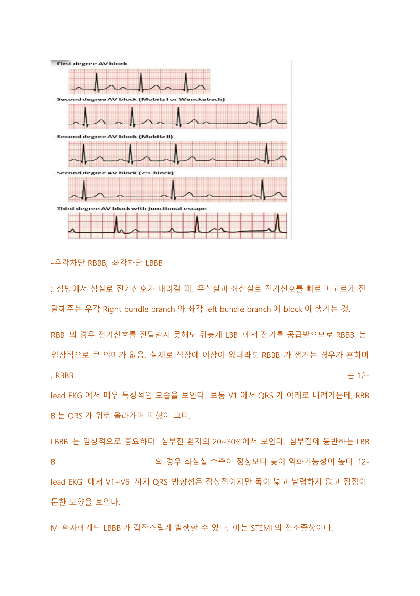
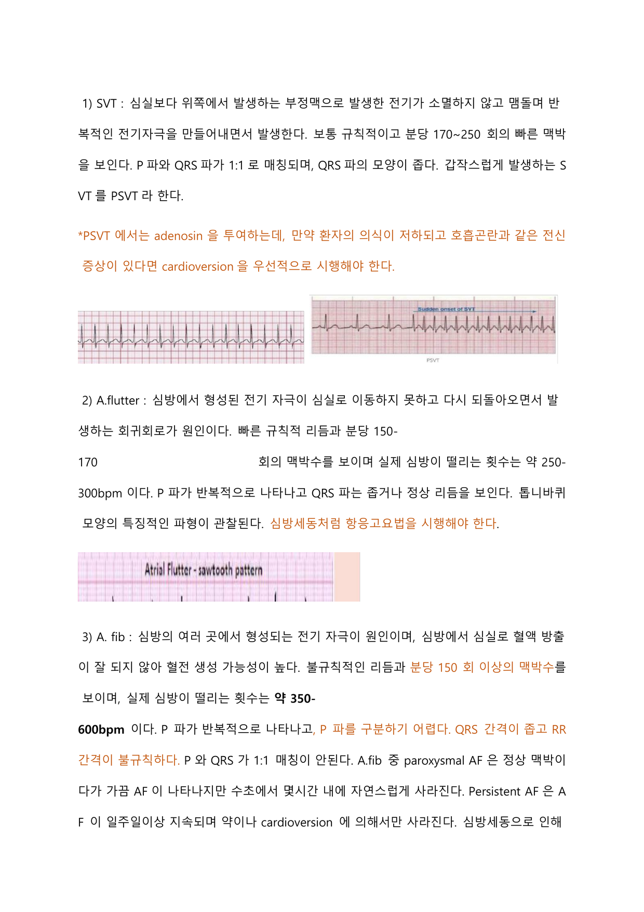
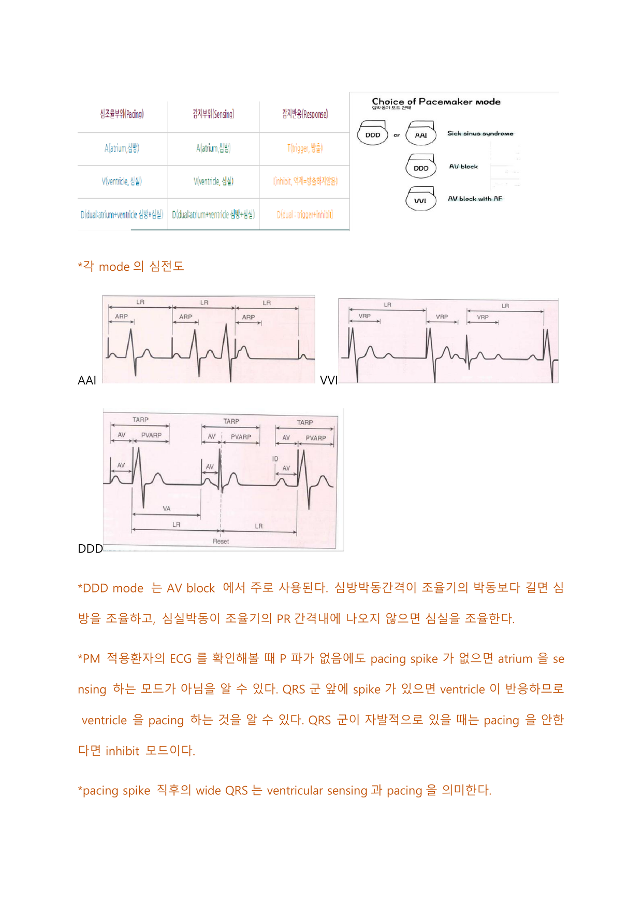

순환기계
관상동맥질환(협심증·심근경색), 부정맥, 심부전, 판막질환, 염증성 심질환, 고혈압, 혈관질환과 순환기 신체검진·혈역학 모니터링을 다루는 계통.
1 협심증 Angina pectoris
하나 이상의 관상동맥이 좁아지거나 막혀서 생기는 심장질환으로, 일과성·가역성 심근허혈에 의한 간헐적 가슴 통증.
관상동맥 내 죽상경화성 병변.
죽상경화증 발병 기전: 내피세포 손상 부위에 콜레스테롤(지질)이 침착·산화되면서 염증반응 시작 → 부착분자 발현, 단핵구가 지질침착부위로 이동해 대식세포로 분화 → 만성 염증으로 평활근세포 증식·섬유판 형성 → 섬유판이 약화되어 조직·지방이 혈액으로 노출되면 응고인자 활성화·혈소판 응집으로 혈전 생성 → 급성 경색 유발.
전 흉부의 짓누르는 듯한 통증·압박감. 흉통이 왼쪽 목·턱·어깨·팔로 방사. 오심·구토·어지러움 동반 가능. 쉬거나 NG(니트로글리세린) 복용 시 5분 이내 완화.
| 안정형 | 불안정형 | 변이형(Prinzmetal/variant) | |
|---|---|---|---|
| 유발 | 운동·심근 산소요구 증가(열·불안·빈맥·고혈압) 시. 고정된 죽상경화판 | 활동 시뿐 아니라 안정 시에도 발생, 갑작스럽게 발생 | 휴식 시 죽상경화판 근처 심장동맥의 일시적 경련 |
| 특징 | 가만히 있을 때 큰 불편함 없을 수 있음 | 증상이 잦아지고 심해짐. 최근 1개월 내 새로 생긴 통증. NG 미투여 시 20분 이상 지속. 심근경색 이환 위험 | 죽상경화판 파괴에 따른 부분적 혈전·색전·혈관경련으로 심각한 허혈 가능 |
| ECG | 정상일 수 있음 | ST 분절 하강, T파 역전 가능 | — |
| 진단·치료 | 운동부하검사 유용 | — | 진단은 CAG로 경련유발검사(에르고노빈·아세틸콜린). 치료: 금연, CCB 선호, 심실빈맥 시 ICD 삽입, CAG상 협착 소견 시 PCI 고려 |
전부하를 감소시키는 약물은 isosorbide dinitrate(Nitrate 계열): 정맥혈관을 확장하여 심장으로 들어오는 혈액을 감소시켜 전부하를 감소.
2 심근경색 MI · STEMI / NSTEMI
관상동맥의 혈액 공급 감소·중단으로 심근이 괴사된 질환. 주로 죽상경화판 붕괴로 혈전이 생성되어 심근세포 손상이 일어남.
| STEMI | NSTEMI | 불안정형 협심증 | |
|---|---|---|---|
| 폐색 | 관상동맥 혈류를 갑작스럽게 완전 폐색 | 부분적 폐색 + 심근효소 유리 | 부분적 폐색, 심근효소 유리 안 됨 |
| ECG | ST 분절 상승 | ST 분절 하강 또는 T파 역전 | ST 하강·T파 역전 가능 |
죽상혈전이 관상동맥을 폐색 → 심근세포 손상. 손상 심근은 처음 12~18시간은 정상 형태, 1~5일째 연화·붕괴, 괴사조직 주변 염증반응 → 육아조직 형성·collagen 침착 → 응고괴사 형태로 단단해짐.
심근허혈 시 시간경과에 따른 변화 순서: 이완기능장애 → 수축기능장애 → 심전도 변화 → 흉통.
전형적 짓누르는 듯한 왼쪽 가슴 통증. 비전형적으로 소화불량·속쓰림으로 나타나거나 통증이 없을 수도 있음. 심장효소 수치 상승, 체온 상승, 백혈구 증가증, 부정맥 발생 가능.
하벽 심근경색(Inferior wall MI): 상복부통증이나 GI 증상(오심) 동반. NG 투약 먼저 후 혈청 Troponin 검사 필요. 복통으로 발현되는 경우가 흔하므로 ECG로 감별.
급성기 ST 분절 상승 → 발생 6~16시간 후 병리적 Q wave 출현 → 이후 T파 역전.

- 부정맥(심실세동 등). 가장 많이 발생하는 부정맥은 PVC(심실조기박동)
- 심부전, 괴사조직 연화 시기 심근 파열, 심실류, 심내막 혈전
- 심실중격파열(ventricular septal rupture): AMI 후 갑작스런 큰 수축기 잡음 + 좌심부전 증상 시 시사. 즉각 혈관이완제와 IABP로 LV 후부하 감소
- Dressler syndrome(post-MI syndrome): MI 후 심막염. 발열·흉통·피로·호흡곤란·관절통·빈맥, 청진상 pericardial friction rub. 흉막삼출, ESR·CRP·CK·Troponin 상승 동반 가능
3 관상동맥질환의 진단·치료 cardiac marker · CAG · PCI · CABG
- 병력청취 + 심전도: 특히 ST 분절 상승 유무를 반드시 감별
- 운동부하검사: 안정형 협심증에 유용. 완전좌각차단(LBBB)이 보이면 약물 유발 핵의학검사 선호. 불가능하면 스트레스영상검사 고려
- 심초음파: 도부타민 심초음파(약물 부하)로 심근 벽운동장애 관찰
- 혈액검사: 지질검사, 심근효소. 심근효소 상승은 급성심근경색 진단에 필수
- 관상동맥조영술(CAG): 관상동맥질환의 확진 검사. 조영제 사용하므로 신기능 평가 중요
- 심근관류스캔: 운동/약물부하로 시행, 혈류 감소 정도 평가
cardiac marker (심근 허혈 시 세포막 손상으로 심근세포질 물질이 혈중 유리):
| 표지자 | 상승 시작/특성 |
|---|---|
| Myoglobin | 허혈 후 1시간 후 상승 시작, 가장 빨리 알 수 있는 지표이나 골격근·신장장애에서도 배출되어 위양성 가능성 높음 |
| CK | 허혈 후 3~4시간 뒤 상승. 상승 정도가 괴사량과 관계. 골격근장애·갑상선기능저하에서도 위양성 가능 |
| CK-MB | 심근 손상 시 유출. 전체 CK 중 CK-MB가 4%보다 많으면 심근 손상 의심 |
| Troponin | 수축조절단백, 상승 시 급성 심근경색 의미. 높은 특이도. 심근손상 후 7~10일 증가 지속 |
| pro-BNP | 심장 부하 시 심실에서 분비되는 호르몬. 모든 심부전에서 증가. 신기능 영향받음, 확진 검사는 아님. 호흡곤란 시 진단에 유용 |
급성심근경색 진단 기준: Troponin-I 증가 + 다음 중 하나 — ① 심근허혈 증상 ② 새로운 허혈성 ECG 변화·병리적 Q wave ③ SPECT/Chest CT상 병변 ④ CAG상 관상동맥 내 혈전.
- ST 분절 상승 시 r/o AMI로 보고 빨리 ASA + PLX(clopidogrel) 투약 후 혈관재개통술 시행
- BB: 베타1 수용체 봉쇄로 심장흥분·심박출량 감소, 산소요구량 감소. 모든 급성기 AMI 환자에서 투여해야 하는 약물. 재개통술 후 V/S 안정 시 저용량부터, SBP 90 이하면 보류. COPD 동반 시 베타1 선택적 차단제(atenolol)
- CCB: 칼슘통로 차단으로 말초혈관저항 감소. DHP 계열(nifedipine·amlodipine)은 협심증·고혈압에 사용하나 맥박수 조절 안 함. non-DHP(verapamil·diltiazem)은 심장·혈관 평활근 모두 작용, diltiazem이 verapamil보다 심장수축 억제작용 작음. 천식·당뇨·말초혈관질환 동반 고혈압에 유용. 단, 급성심근경색 이차예방에는 도움 안 됨
- ACEi: 안지오텐신 I→II 전환 차단, 세동맥 확장·말초저항 감소·알도스테론 분비 감소. AMI에서 좌심부전 있으면 ACEi 사용. Captopril·enalapril·ramipril. 부작용: 마른 기침, 혈관부종, 고칼륨혈증
- ARB: 안지오텐신 II의 수용체 결합 차단. 기침·혈관부종 있는 환자에서 ACEi 대용. Candesartan·irbesartan·losartan
- statin 계열 지질강하제, 항혈소판제(아스피린·clopidogrel; P2Y12 작용 약물 clopidogrel·prasugrel; eptifibatide는 혈소판응집억제제), 항응고제(와파린·NOAC·LMWH), 진통제
- PCI(풍선확장술·스텐트): STEMI 환자에서 반드시 필요. 시행 후 6개월 이상 항혈소판제 병합요법(ASA+PLX). 성공 지표: 통증 감소, ST elevation 감소, CK/Troponin 감소(ST가 baseline 회복되어야 관류 회복 의미)
- CABG(관상동맥우회술): 여러 혈관 침범·심한 석회화로 스텐트 어려운 경우 고려. CABG 전 clopidogrel은 5일 전 중단. 후 시간당 200ml 이상 흉관배액은 재수술 필요. 술후 1~3일째 가장 잘 나타나는 부정맥은 심방세동(디곡신·BB·아미오다론·Mg 투약)
- 약물방출스텐트는 일반금속스텐트보다 재협착은 감소시키나 스텐트혈전증 위험. 어떤 스텐트든 이중 항혈소판요법 시행
- PCI는 CABG 대비 major adverse cardiac event·repeat revascularization이 더 많고 stroke는 더 적음
약물 투여, 산소 공급, 침상 머리 상승, 침상 안정, 통증 양상 사정. 생활습관 교정(고혈압·고지혈증·당뇨 관리, 금연, 적절한 운동, 스트레스 감소). 처방약 매일 정확히 복용, 흉통·가슴답답함 등 증상 변화 시 즉시 병원 방문 교육.
CAG 후 관리: sheath 제거 시 혈관미주신경 반응 시 아트로핀 주사(서맥 없이 저혈압만 있으면 NS 주입). 후복막출혈 시 등·서혜부 통증, Hb·Hct 확인. 관상동맥경련 예방 위해 NG CIV.
4 부정맥 Arrhythmia · SVT/AF/Aflutter/VT/VF
- 자극형성장애: 동결절이 아닌 다른 부위에서 전기자극 형성
- 자극전도장애: 동결절 자극이 다음 단계로 전도되지 못함
- 혼합형성장애: 전도 차단 + 비정상 박동 혼합
서맥: 동결절 전기자극 60회 미만, 리듬 규칙적·파형 정상. 의식저하·실신·저혈압 시 아트로핀 투여 또는 심박동조율기 사용.
WPW 증후군(Wolff-Parkinson-White): 심방·심실 사이 비정상 전기교통로를 가진 선천성 이상(심실조기흥분증후군). 델타파, 짧은 PR(0.12초 이상), 넓은 QRS 특징.
| 특징 | |
|---|---|
| 1도 | PR 간격 0.2초 이상 지연, 리듬 규칙적·QRS 정상. 혈압에 문제 없으면 중재 불필요. 저혈압·의식변화 시 atropine |
| 2도 Mobitz I | PR이 점점 연장되다가 QRS 탈락. P·QRS 모양 정상 |
| 2도 Mobitz II | PR 일정하다가 급작스레 QRS 탈락. QRS는 종종 넓은 비정상 |
| 3도(완전) | 심방 자극이 심실로 전혀 전달 안 됨, 심방·심실 각각 박동. PR 측정 불가. 서맥, P와 QRS가 따로 노는 양상 |
RBBB: 임상적으로 큰 의미 없음(LBB에서 뒤늦게 전기 공급). V1에서 QRS가 위로 올라가고 파형이 큼. LBBB: 임상적으로 중요(심부전 환자 20~30%). MI 환자에서 갑작스런 LBBB는 STEMI 전조증상.

| Vtach(심실빈맥) | Vfib(심실세동) | |
|---|---|---|
| 리듬·맥박 | 규칙/불규칙, 분당 100~250회, 맥박 촉지될 수도 안 될 수도 | 불규칙, 분당 400~600회, 맥박 촉지 안 됨 |
| 파형 | QRS 0.12초 이상 넓고 비정상, P파 가려져 측정 불가 많음 | 심실세동파만 있고 QRS·P파 없음 |
| 약물 | lidocaine(비활성 Na채널 차단), 재발·저항 시 amiodarone | — |
심실성 부정맥을 야기할 위험이 가장 큰 전해질 불균형은 저칼륨혈증.
| SVT | Aflutter(심방조동) | AF(심방세동) | |
|---|---|---|---|
| 리듬·맥박 | 규칙적, 분당 170~250회 | 빠른 규칙적, 분당 150~170회(실제 심방 250~300bpm) | 불규칙, 분당 150회 이상(실제 심방 350~600bpm) |
| 파형 | P:QRS 1:1, QRS 좁음. 갑작스런 SVT는 PSVT | 톱니바퀴(sawtooth) 모양 P파, QRS 좁거나 정상 | P파 구분 어렵고 RR 불규칙, QRS 좁음, P:QRS 1:1 매칭 안 됨 |
| 치료 | adenosine. 의식 저하·호흡곤란 등 전신증상 시 cardioversion 우선 | 심방세동처럼 항응고요법 시행 | 심박수 조절 즉시(주로 diltiazem). 약물 무반응·저혈압·전신증상 불안정 시 cardioversion |
AF 분류: paroxysmal AF(수초~몇시간 내 자연 소실), persistent AF(1주 이상 지속, 약물·cardioversion으로만 소실). AF은 실신·심계항진·흉통 유발, 혈전으로 뇌졸중·심부전 유발. 갑상선기능항진·전해질불균형(K·Ca·Mg) 시 유발 가능. 심방성 빈맥에서는 CCB·adenosine 투여 고려.

5 항부정맥제·항응고제·심율동전환/제세동·pacemaker
| Class | 기전·약물 |
|---|---|
| I | 나트륨 통로 차단약. QRS·QT 간격 늘림. lidocaine, procainamide |
| II | 베타 차단제. 맥박 감소·PR 간격 증가. propranolol, esmolol |
| III | 칼륨 통로 차단약. 활동전위 연장·QT 간격 늘림. amiodarone, sotalol, ibutilide |
| IV | 칼슘 통로 차단제. 맥박 감소·PR 간격 증가. verapamil, diltiazem |
그 외 PSVT 치료에 adenosine, digitalis 유발 부정맥에 magnesium·potassium.
amiodarone은 QT 간격 연장으로 TdP 초래 가능. TdP 발생 기전은 조기 후탈분극(early afterdepolarization). QT는 선행 RR의 1/2을 넘지 않아야 함. Long QT로 유발된 TdP 심정지에서는 혈역학적 불안정 시 제세동, 안정 시 Mg sulfate 투여(저마그네슘혈증 아니어도). TdP에서 amiodarone은 투여 금기.
AF 등 혈전 발생 가능성 높은 부정맥에서 와파린·NOAC·LMWH·Heparin 사용. 보통 NOAC을 많이 쓰나, 판막질환·기계판막 환자는 무조건 와파린.
| Warfarin | NOAC | Heparin / LMWH | |
|---|---|---|---|
| 기전 | Vit.K 억제 → 간 합성 응고인자 억제 | 활성화 Xa 또는 thrombin 직접 억제(Pradaxa·Xarelto·Eliquis) | antithrombin 활성화, Factor Xa·thrombin 억제 |
| 모니터링 | PT INR 필요(치료적 INR 2~3) | INR 모니터링 불필요, Vit.K 영향 적음 | 비분획 heparin은 aPTT(1.5~2.5배), LMWH는 모니터링 불필요 |
| 해독제 | Vit.K | — | protamine sulfate |
| 임산부 | 금기(유산·출산결함) | — | heparin은 태반 통과 못해 사용 가능 |
검사 정상범위: PT 11.4~15.4초(외인성 경로, 치료범위 1.2~1.5배), INR 0.8~1.3(치료 2~3), aPTT 25~45초(내인성 경로, heparin 환자 1.5~2.5배). INR 4 이상 출혈 위험↑, 출혈 없는 INR 5 이하는 와파린 일시 중단, 출혈/고위험 시 Vit.K 투여. 직접트롬빈억제제: lepirudin·bivalirudin.
tPA(alteplase·reteplase): plasminogen→plasmin 전환으로 fibrin 분해. 조절 안 되는 고혈압, AMI 증상 발생 3시간 이상 경과 시 금기.
| 심율동전환(cardioversion) | 제세동(defibrillation) | |
|---|---|---|
| 방식 | QRS와 전기충격 일치(synchronization), 회귀회로 차단. QRS 정상 리듬에서만 | 흥분 주기와 상관없이 강력한 충격 |
| 적용 | 심방성 부정맥, SVT, V-tach with pulse | pulseless V-tach, V-fib |
| 에너지/손상 | 낮은 에너지, 심근 손상 덜함 | 높은 에너지, 심근 손상 더 발생 |
제세동 금기: 디지털리스 중독 부정맥, 심장 이외 질병에 의한 빈맥, 심방·심실 혈전 형성. 뇌색전 위험 높으면 생명 위급 제외하고 2~3주 항응고제 투여 후 실시하고 이후에도 2~3주 항응고제 사용. Pacemaker 환자는 최소 12cm 떨어진 부위에서 제세동.
인공심박동기는 심한 서맥성 부정맥 치료 위해 좌측 가슴에 삽입, generator + lead로 구성. 일시적(외부 발생기, temporary pacing wire)·영구적(경정맥형·경흉부형)으로 구분.
DDD mode는 AV block에서 주로 사용. ECG에서 QRS 앞 spike 있으면 ventricle pacing, 자발적 QRS 시 pacing 안 하면 inhibit 모드. pacing spike 직후 wide QRS는 ventricular sensing·pacing 의미.
ICD vs PM: ICD는 빈맥형 부정맥 회복, PM은 서맥형 부정맥 교정. 흉부 X-ray상 ICD는 ICD coil이 보임.

6 심부전 Heart failure · CHF
- 유전적 소인, 흡연, 비만
- 고혈압·관상동맥질환(후부하 증가), 심방세동, 갑상선 질환, 빈혈, 신장질환
- 갑상선기능저하/항진은 급성심부전 악화요인
- 악화 약물: NSAIDs, steroid, 심독성 항암제, 알코올, nifedipine(CCB)
울혈성 심부전: 심장이 돌아온 혈액을 효과적으로 박출하지 못해 조직 관류 장애·정맥 울혈 초래. 두 가지 기능장애 — 이완기 기능장애(높은 후부하에 적응 능력 저하, 심실 충만 지연, 일회 박출량 감소)와 수축기 기능장애(심근경색 등 손상으로 수축 불가, 일회 박출량 감소·전부하 증가·심실 확대). 동일 비율로 발생.
| 좌심부전 | 우심부전 | |
|---|---|---|
| 주원인 | 허혈성 심장병, 전신 고혈압, 승모판/대동맥판막 질환, 원발성 심근병 | 좌심기능상실, 원발성 폐질환 |
| 기전 | 혈액이 폐로 역류 → 폐정맥압 상승·폐포 체액 삼출 | 혈류가 체내 저류 → 정맥압 증가 |
| 증상 | 호흡곤란·기좌호흡, 기침, crackle, blood-tinged sputum, 피로, 말단 청색증, 경정맥 팽대, 다리 부종, 수축기 심잡음, EF 감소 | 경정맥 확장, 간·비장 비대, 다리·발목 부종, 복수, 체중증가, 오심·구토 |
좌심부전: 심박출계수↓, CVP·폐모세혈관쐐기압·말초혈관저항·좌심실확장기압↑.
흉부 X-ray로 심비대 확인. 혈액검사 pro-BNP. 심초음파로 EF 확인 — 60% 이상 정상, 40~50% 경계성 심부전, 40% 미만 심기능 약화. 혈중 노르에피네프린 등 교감신경 활성 수치 상승. EF가 정상인 심부전은 HFpEF(고령·고혈압·여성·당뇨·비만에 흔함, ACEi·ARB·BB 생존율 향상 미증명, 전체의 50% 차지).
- ACEi/ARB: 안지오텐신 차단으로 혈관 확장(후부하 감소), 나트륨·수분 배출(이뇨작용)
- BB: 교감신경 차단으로 혈압·맥박 감소(당뇨 환자에게는 사용 안 함)
- 강심제(디곡신): 심근수축력 증가·심박동 안정화. ACEi·BB·이뇨제 사용에도 악화 시 사용. 도파민·도부타민 같은 수축 촉진제 사용
- 이뇨제: 수분·나트륨 배설. Lasix(loop)는 전신순환혈액량 감소로 전부하 감소. 단독 사용 안 함, 주로 loop 이뇨제
- Ivabradine: 동결절 작용, 수축력 영향 없이 맥박수만 감소
- 혈관확장제(nitrate, Nesiritide; SBP 90 미만이면 중단), nitroglycerin(급성심부전, 가장 흔한 유해반응 두통), 항부정맥제(amiodarone), 항응고제
도부타민: 심박동수 증가 없이 심박출량 증가. 응급실 내원 급성심부전 환자에게 즉각 투여 예상 약물.
Digoxin: Na+/K+ATPase 억제로 심근수축력 증가. 부작용 피로감·서맥·오심·식욕부진. 디곡신 농도 2ng/ml 초과 금지. 치명적 부작용은 부정맥·저칼륨혈증. 칼륨과 이온 결합부위 경쟁이므로 칼륨 수치 확인하며 투여(thiazide·loop 이뇨제 병용 시 주의). 디지털리스 중독: 식욕부진·오심·구토·혼돈·환각·섬망·시력장애·방실차단. 독성으로 HR 100회 이상 방실접합부빈맥 시 sinus 회복까지 디곡신 중단.
- 판막 기능 이상 → 판막치환술, 관상동맥 협착 → PCI·CABG, 부정맥 → PM·ICD
- 심장재동기화치료(CRT): 좌우심실에 유도선 삽입, 동시 수축하도록 전기자극
- LVAD/VAD: 대부분 심장이식 전까지 사용, portable VAD는 퇴원 가능. 혈전방지 위해 항응고제 투여. 합병증: 감염·출혈·뇌졸중·기계관련. 심장이식술 고려
활력징후·심장모니터·맥박양상·호흡상태·폐음(기저부 crackle)·심음(S3 심부전 초기, S4)·경정맥 팽창·복부·부종·활동 내구성·소변량 평가. 산소요구량 감소 위해 신체적·심리적 휴식, 산소 제공, 침상머리 상승, 폐음·심음·소변량·체중·복부둘레 측정. 퇴원교육: 저나트륨 식이, 식사 후 바로 활동 안 함, 점진적 운동 프로그램.
7 심근병증 DCMP · SCMP · HCMP · ICMP
| 유형 | 특징 |
|---|---|
| DCMP(확장성) | 심실 수축기능 장애로 심장 확장·심부전 동반. 전체 심부전의 약 25%. 심근염·독성물질 대사장애로 발생 가능 |
| SCMP(스트레스성) | 시상하부 카테콜라민 과다 분비로 심장이 지속 흥분상태가 되며 순환 문제 발생 |
| HCMP(비후성) | 뚜렷한 원인 없이 심근 비후. 심실 내강이 좁아지고 수축기능 정상이나 이완능력 저하. CAG상 spade 모양 특징 |
| ICMP(허혈성) | 심근허혈 반복으로 DCMP 유사 벽운동저하. EF 저하 시 양심실 박동조율기 삽입 필요 |
8 판막질환 Valvular heart disease
| 판막 | 협착(stenosis) | 역류(regurgitation) |
|---|---|---|
| 대동맥판(AS/AR) | 좌심실 혈액이 대동맥으로 박출 안 됨 → 좌심실 후부하 증가·비대 → 좌심부전. 잡음은 경동맥으로 방사, 다이아몬드형(crescendo-decrescendo) 잡음, 오른쪽 2번째 늑간 청진. 증상: 실신·협심통·호흡곤란·심부전(부종은 일반적이지 않음) | 판막 폐쇄기능부전으로 혈액이 좌심실로 역류 → 좌심실 비대·좌심부전. 경동맥 박동성 느려짐, 수축기 심잡음, 저혈압, 동성서맥·좌심실비대 |
| 폐동맥판(PS/PR) | 우심실 혈류가 폐동맥으로 박출 안 됨 → 우심실 압력 증가·비대 → 우심부전. 주로 선천성, 성인 드묾(아동 청색증) | 혈류가 우심실로 역류 → 우심실 확장·폐동맥압 증가 → 우심부전. 진행 시 폐동맥고혈압 증상 |
| 승모판(MS/MR) | 좌심방→좌심실 혈류 이동 부족·역류 → 좌심방 비대·압력 증가 → 폐정맥 울혈·폐부종·가스교환장애. 증상: 호흡곤란·흉통·피로·기침·객혈·쉰목소리. MS 가장 흔한 원인은 류마티스열(40%), 제1심음 증가·약간 지연, 마차 구르는 듯한 이완기 심잡음(왼쪽 쇄골중간선 제5늑간 청진). 승모판탈출증은 수축기말 잡음·수축기 클릭 | |
| 삼첨판(TS/TR) | 우심방→우심실 혈류 부족·역류 → 우심방 비대·정맥압 상승 → 경정맥 울혈·복수·말초부종·피로. TR 환자에 폐동맥카테터 삽입 시 중심정맥압 왜곡 가능 | |
흉부 X-ray로 심실 비대 확인. 협착은 CT·MRI로 석회화 판막 확인, 역류는 CT로 비정상 판막엽 확인. ECG상 상승된 P파(심방 수축 진행)·늘어진 QRS. 심초음파 color doppler로 역류를 1~4단계 확인.
- 약물: ACEi로 혈관 확장, 이뇨제로 심부담·폐울혈 감소, 항고혈압제로 후부하·역류 감소. 염증성 심질환 원인 시 항생제(예방적 항생제는 적응증 아님). Afib 동반 시 항부정맥제. 판막 시술·수술 후, 뇌경색·Afib 동반 시 항응고제
- 수술: 대동맥판막치환술(개흉술 대신 경피적 TAVI — 대퇴동맥 접근). 인공판막은 조직판막(7~15년 수명, 항응고제 수술 후 약 3개월만)과 기계판막(영구 사용, 평생 항응고제, clicking noise). 폐동맥판막협착은 balloon valvuloplasty. chordoplasty·annuloplasty. 심부전 심하면 심장이식술
9 염증성 심질환 Rheumatic / Endocarditis / Myocarditis / Pericarditis
A군 베타 용혈성 연쇄상구균 인후염 후 면역반응으로 항체가 심장 조직을 공격하는 자가면역질환. 심근염·관절염 유발, 반복 시 심부전·감염성 심내막염·판막 기형(특히 이첨판 손상) 유발. 예방 중요 — 인후염 시 페니실린 등 항생제 치료, 효과 없으면 스테로이드 병행, 판막 손상 심하면 인공판막대치술.
심내막·판막에 박테리아 염증. 혈류 불규칙 → 심내막 손상 → 혈소판·혈전 축적(혈전성 심내막염) → 세균 증식. 원인: 류마티스성/선천성 심질환에 의한 판막 손상, 박테리아 감염, 정맥용 약물 사용. 증상: 발열이 가장 흔함, 심잡음, 혈액배양 양성, 색전, 점상출혈, 8주 이상 지속되는 고열·오한·권태감, 확장기 잡음. 치료: 경험적 항생제(베타락탐계 + aminoglycoside, 과민반응 시 vancomycin). 치료 지연·균혈증 지속·만성 심부전·색전 시 판막수술. 예방: 심장질환 환자는 수술·치과치료 전 예방적 항생제(페니실린, 알러지 시 azithromycin).
심장근육 염증으로 심근 손상. 바이러스(특히 콕사키)·세균·진균·기생충. 심근 약화·수축력 감소·확장성 심근병증 유발 가능. 경할 경우 대증치료·휴식으로 회복. 부정맥·심부전 유발 시 스테로이드·베타차단제·ACEi·이뇨제, 항바이러스제·고용량 감마글로불린. 심할 경우 LVAD·ECMO·심장이식. 흉통 호소 시 Morphine이 가장 효과적(NG는 무효 — 관상동맥혈류와 무관).
심낭 염증으로 삼출물이 차고 심장기능 장애 초래, 대부분 바이러스성. 동반 질환 확인·치료 병행. 발열·흉통·염증반응 완화 위해 ASA·NSAIDs·colchicine(위장부작용 예방 위해 PPI 병용). 호전 없으면 스테로이드. 삼출물 급격 증가 시 심낭절개술·심낭천자술.
| 급성 심낭염 | 급성 심근경색 | |
|---|---|---|
| ST 상승 | U자 모양으로 위로 올라감 | U를 거꾸로 한 비석 같은 모양 |
| QRS | 별 변화 없음 | 변화 있음 |
| T파 역전 | ST 정상화되고 수일 후 | ST 정상화 전에 나타남 |
10 고혈압 Hypertension
혈압은 심박출량과 말초혈관저항으로 유지. 원발성(본태성)은 원인 불명, 속발성(이차성)은 원인을 아는 고혈압(신장질환, 쿠싱증후군의 안지오텐시노겐 분비 촉진, 갑상선기능항진, 경구피임제·교감신경흥분제 등 약물).
레닌-안지오텐신-알도스테론계(RAAS): 혈류량 부족 시 신장 juxtaglomerular apparatus에서 renin 분비 → 안지오텐신 → 안지오텐신 I → 폐·신장 ACE에 의해 안지오텐신 II 전환. 안지오텐신 II는 ① 교감신경 활성화(혈관수축·심근수축력·혈압 증가) ② 세뇨관에서 Na·Cl 재흡수·K 배출 ③ 부신 알도스테론 분비 ④ 소동맥 수축 ⑤ 뇌하수체 후엽 ADH 분비.
| 분류 | 기전·약물·특징 |
|---|---|
| CCB | 칼슘통로 차단→말초혈관저항 감소. 초기치료제. DHP(nifedipine·amlodipine, 두통·안면홍조·빈맥·기립성저혈압), non-DHP(verapamil·diltiazem, 심박수 감소). 천식·당뇨·말초혈관질환 동반 시 유용 |
| BB | 베타1 봉쇄로 심장흥분 억제·심박출량 감소, renin 분비 억제. 천식·기관지질환에는 CCB가 일차. propranolol(베타1,2 차단, 천식 금기), atenolol. 방실차단 시 중단 |
| 알파차단제 | 알파 수용체 차단→말초혈관 확장. 첫 투약 후 체위성 저혈압(첫 용량 1/3 또는 취침 전). prazosin·doxazosin. 전립선비대증 증상 개선. clonidine은 뇌 알파2 흥분으로 교감신경 억제. labetalol은 알파·베타 모두 차단(고혈압위기·빈맥·협심증 동반 시 효과적) |
| ACEi | 안지오텐신 I→II 차단, 세동맥 확장·알도스테론 감소. 당뇨병성 신증에도 사용. captopril·enalapril·ramipril. 부작용: 마른기침·혈관부종·고칼륨혈증. 신동맥 협착 환자는 급격한 신손상 가능 |
| ARB | 안지오텐신 II 수용체 결합 차단. ACE의 브라디키닌 분해 차단 안 하므로 마른기침 적음. candesartan·irbesartan·losartan |
| 레닌억제제 | 직접 renin 억제. aliskiren. 임신 중 금기, 고용량에서 설사 |
| 혈관확장제 | NO 유리로 혈관 확장. hydralazine(임신성 고혈압 단독요법)·minoxidil(털과다증). 이뇨제·베타차단제와 병용 |
| 이뇨제 | thiazide(원위세뇨관 Na·K 배설↑·칼슘 재흡수, 저칼륨혈증·요산축적/통풍 가능, 신장결석 환자에 유용), loop(헨레고리 상행각, 급성 폐부종 응급, furosemide, 전부하 감소, 저칼륨혈증·고요산혈증·이독성), 칼륨보존이뇨제(집합관, 여성유방증·생리불순), 탄산탈수소효소억제제(녹내장 안압), 삼투이뇨제(mannitol, 뇌압) |
DM 동반 시 ACEi·ARB·CCB·BB·이뇨제 모두 가능. 2018 가이드라인 — 동반질환 없는 노인은 ACEi·ARB·CCB·이뇨제 1차약제. 고혈압 위기 시 SBP 목표는 2시간에 걸쳐 25~30%씩 감소.
- 식이: 소금 하루 6g 이하, 채소·과일·저지방 유제품. DASH 식이(칼륨·칼슘·마그네슘·식이섬유 늘리고 나트륨·지방 줄임, 수축기·이완기 혈압 감소 효과)
- 생활습관: 절주·금연, 매일 일정 시간 가정혈압 측정(측정 전 30분 이내 흡연·음주·카페인 금지)
- 운동: 하루 30분 이상 중등도 강도, 주 5회 이상
- 약물 복용 이행: 매일 일정 시간 복용, 타병원 내원 시 복용약 알림
11 말초혈관·혈관 신체검진 ABI · Allen test · Homan's sign
말초동맥 폐색 확인 검사. 발목 수축기 혈압 ÷ 팔 수축기 혈압. 정상 0.9~1.3, 낮으면 말초동맥 폐색·혈류 저하. 트레드밀 5분 운동 후 휴식 시보다 수치가 낮아도 말초동맥 폐색. capillary refill time은 2초 이내 정상(혈류 감소·추운 곳에서 지연).
요골동맥·척골동맥 순환 평가. 일반적으로 혈류 복귀 5~10초, 더 오래 걸리면 측부순환 폐쇄 의미. ABGA 동맥혈 채혈 또는 CABG 대체혈관으로 radial artery 사용 가능 여부 판단 시 사용.
혈전성 정맥염·심부정맥혈전증 의심 환자 사정법. 무릎을 약간 구부리고 발을 발등 쪽으로 굴곡 → 종아리·무릎 뒤 오금에 통증 호소 시 양성. DVT 없는 사람도 종종 양성이므로 확진 불가, 추가 검사 필요.
12 대동맥류·대동맥박리 Aortic aneurysm · Aortic dissection
대부분 무증상, 간혹 누우면 복부에서 박동이 느껴짐. Back pain 시 파열 의심. 흉부대동맥류 진전 확인은 chest CT, 혈압 조절이 가장 중요(SBP <120 이하). 가성동맥류는 대퇴동맥 접근 시술(관상동맥중재술 등) 후 발생 가능 — 서혜부 통증·혈관잡음 청진 시 의심.
대동맥 내막의 미세 파열로 중막이 세로로 찢어지며 혈관 분리. 극심한 흉통·혈압 상승·빈맥·흉골하 심잡음·종격동 확장 시 의심. 90% 이상에서 죽을 것 같은 통증, 통증 위치가 박리 위치 예측에 도움.
| type A | type B | |
|---|---|---|
| 침범 | 상행대동맥 침범(상행~하행 병변) | 상행대동맥 침범 안 함 |
| 치료 | 수술적 치료 | 내과적 치료 |
13 DVT·폐색전증 DVT · PTE
- 과다응고: 탈수, 경구 피임제, 흡연, 급성 감염
- 혈액정체: 부동, 비만, 임신, 노화, 심부전
- 혈관내벽 손상: 외상, 수술, 정맥판막질환, 죽상경화증
젊은 여성에서 하지부종·통증·발열·불편감·발적 시 DVT 의심. Afib은 동맥 혈전색전증과 관련이 더 높고 DVT와는 관련성 크지 않음. 대퇴골 손상 후 움직임 장애 환자에서 흉통·호흡곤란 갑자기 발생 시 PTE(폐동맥색전증) 예상 — CT상 양측 폐동맥혈전증.
14 이상지질혈증 Dyslipidemia
총콜레스테롤 수치가 높을 때 LDL·HDL·중성지방 평가 필요. 지질검사 정상범위:
| 항목 | 정상범위 |
|---|---|
| Total cholesterol | <200 mg/dL |
| HDL | >40 mg/dL |
| LDL | <130 mg/dL |
| Triglycerides | <150 mg/dL |
15 순환기 신체검진(심음·맥박결손) Heart sounds S1~S4
| 심음 | 내용 |
|---|---|
| S1 | 삼첨판·이첨판이 닫히는 소리, 수축기의 시작 |
| S2 | 대동맥판막·폐동맥판막이 닫히는 소리, 수축기의 끝·확장기 시작 |
| S3 | 심실 확장기 시초 심방 유입 혈액으로 심실벽·이첨판 진동, 저음·지속 짧아 청취 어려움. 오른쪽 S3는 흡기 시, 왼쪽 S3는 호기 시 증가 |
| S4 | 확장기 말에 심실이 채워지는 소리 |
고령 환자에서 S3 심음은 정상소견이 아님. 좌·우심실 부전 시 제3심음 청진 가능. 심방중격결손은 일정한 S2 분열음, 심실중격결손은 새로운 범수축기 잡음(holosystolic murmur)과 저혈압. 심근경색 시 심음이 잘 안 들리고, 초기 감염성 심내막염은 심음 정상, 심낭염 시 심낭마찰음.
맥박결손 확인: 심첨맥박과 요골동맥 맥박을 차례로 확인하여 차이를 봄 — 심첨맥박 후 요골맥박이 존재해야 하므로 심첨맥박을 먼저 확인 후 요골동맥 맥박을 확인하여 차이가 벌어지면 맥박결손. 한쪽 손 온도가 더 낮게 측진될 때 우선 손등으로 전박 온도를 측정(냉기 확장 확인) 후 맥박 측정.
16 12 lead EKG·ECG 판독
- 사지유도 6개 (I·II, augmented bipolar; aVR·aVL·aVF, augmented unipolar), 흉부유도 6개 (V1~V6)
- II·aVF의 ST elevation은 하벽부 심근경색 관련. V1~V4에서 3mm ST 분절 상승 시 MI 의심·혈전용해치료 적응증
- EKG 1칸 = 0.2초. 맥박수 구하기: 300-150-100-75-60-50
- Tall and Peaked T wave + 소변량 감소 → hyperkalemia with AKI 의심
QT prolonged 원인: 전해질 이상(저칼륨혈증·저칼슘혈증·저마그네슘혈증), amiodarone 등 항부정맥제(class I·III), NP약(phenothiazine 계), 항생제(ampicillin·erythromycin), 뇌출혈, 허혈성심질환, 심근염, 심한 서맥.
17 혈역학 모니터링·IABP·ECMO·심장재활
- 저혈량성 쇼크: RA(중심정맥압)·PAOP(폐쇄기압)·BP 낮고 SVR 상승. 수액치료 적절성 지표는 CO·SvO2·SVR (정상 CO 4~8L/min, SvO2 60~80%, SVR 800~1200). 가장 적절한 정맥주사 용액은 정상 혈청 알부민. 저혈량 자료: HR 증가, PAOP 감소, CVP 감소
- 전부하 증가: RAP·PAOP·PAP 상승 → 수포음 동반 시 폐부종 의심, 이뇨제 사용. 용적 과부하 시사 정보는 RAP·PAOP, PAP는 폐동맥고혈압 관련
- pericardial tamponade: 혈압 감소·CVP 증가·종격동 튜브 배액량 안 보임·심음 감소 → 종격동 튜브 추가 삽입으로 배액
- PCWP(폐모세혈관쐐기압, 정상 4~12mmHg): 대퇴전치환술 등 수술 후 출혈은 PCWP 급격 감소 초래, 가장 적절한 중재는 수혈
- 혈관수축제: 가장 빨리 혈압 올리는 것은 NE(알파-아드레날린성, 좌심실 수축력 증가·말초혈관 수축). 도파민은 SBP 최소 70 이상일 때 효과적, 도부타민은 SBP 70~100·쇼크 증상 없는 폐울혈에 사용. 심장성 쇼크 치료 목표는 MAP 상승(MAP 60 이상이어야 뇌관류 제공)
intra-aortic balloon pump — 이완기 동안 풍선을 팽창시켜 관상동맥 혈류 증가로 심근 산소공급 증가. 목적은 후부하 감소와 관상동맥혈류 상승. 카테터는 좌측 쇄골하동맥보다 2cm 가량 낮은 위치까지 삽입(CXR에서 풍선 끝은 제2늑간). 제거 시 카테터 주변 혈전 가능성으로 즉시 지혈 안 함. 제거 조건: CVP <10~15, CI >2.0, IABP 1:3 or 1:4, SBP >100, 강심제 사용 최소화.
- VA type: 정맥관 배액→동맥혈 관류, 순환보조. 높은 SVR 시 nitroprusside 투여
- VV type: 정맥관-정맥관, 인공호흡기 무반응 단독 호흡부전에 사용
PEA 시 추정 원인: cardiac tamponade, tension pneumothorax. CPB(체외순환)는 혈전형성·혈액응고·염증반응으로 ARDS 등 장기합병증 초래.
심장재활 3단계: 1단계(입원 중), 2단계(퇴원·외래), 3단계(가정 평생 예방). 심장이식 후 거부반응 확진 검사는 심근생검(급성거부반응 시 methylPd 500mg~1g 3일간 IV). 저체온요법(목표체온유지치료)은 ROSC 후 12~24시간 권고, 중심체온 32~34도. 부루가다증후군은 V1 특징적 ST elevation, 실신·심실부정맥 시 ICD. 심장돌연사의 80%는 급성관상동맥증후군. GRACE score는 급성관상동맥증후군 위험도(6개월 사망률) 평가.